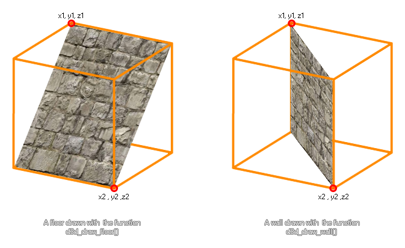

d3d_draw_floor(x1, y1, z1, x2, y2, z2, tex, hrepeat, vrepeat)
| Argument | Description |
|---|---|
| x1 | The initial x coordinate of the floor. |
| y1 | The initial y coordinate of the floor. |
| z1 | The initial z coordinate of the floor. |
| x2 | The opposite x coordinate of the floor. |
| y2 | The opposite y coordinate of the floor. |
| z2 | The opposite z coordinate of the floor. |
| tex | The id of the texture to use (-1 for no texture) |
| hrepeat | Amount of horizontal repetitions for the texture. |
| vrepeat | Amount of vertical repetitions for the texture. |
Returns: N/A
This function draws a simple floor in 3D space. You set the
first corner coordinates (x1,y1,z1) and then the coordinates for
the opposite lower corner. You can also specify a texture
for the floor and the amount of times that you wish this texture to
be repeated vertically and horizontally. If you do not wish to use
a texture you can set this to -1 and the hrepeat and vrepeat values
will be ignored. This function appears to be exactly the same as
the function to draw a wall, but the way they work is actually
quite different, as illustrated in the image below:
 Note:If
the texture has to repeat over the floor, the source texture must
be a power of 2 in size (eg: 8x8, 128x128, 256x256 etc...),
otherwise you can use any size texture.
var tex;
tex = background_get_texture(bck_Floor);
d3d_draw_floor(100, 140, 200, 20, 20, 0, tex, 1, 1);
The above code stores a texture in the variable "tex" and then uses it to texture a sloping floor that has been drawn.